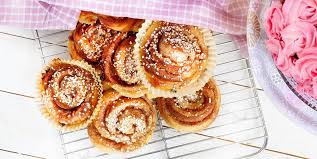

Goda nybakade kanelbullar (kallas även kanelsnäckor eller kanelsnurror), redo att avnjutas!
Processen tar ungefär 2,5 timmar
Det blir 50 stycken kanelbullar
Näringsvärde per bulle 117 kcal
* 50 gram jäst för söta degar
* 150 gram smör
* 5 dl mjölk
* 1 dl strösocker
* 2 krm salt
* 3 tsk malen kardemumma
* 11-13 dl (660-780 g) vetemjöl
* 100 g smör
* 1 dl strösocker
* 1 msk kanel
* ca 10 dl pärlsocker